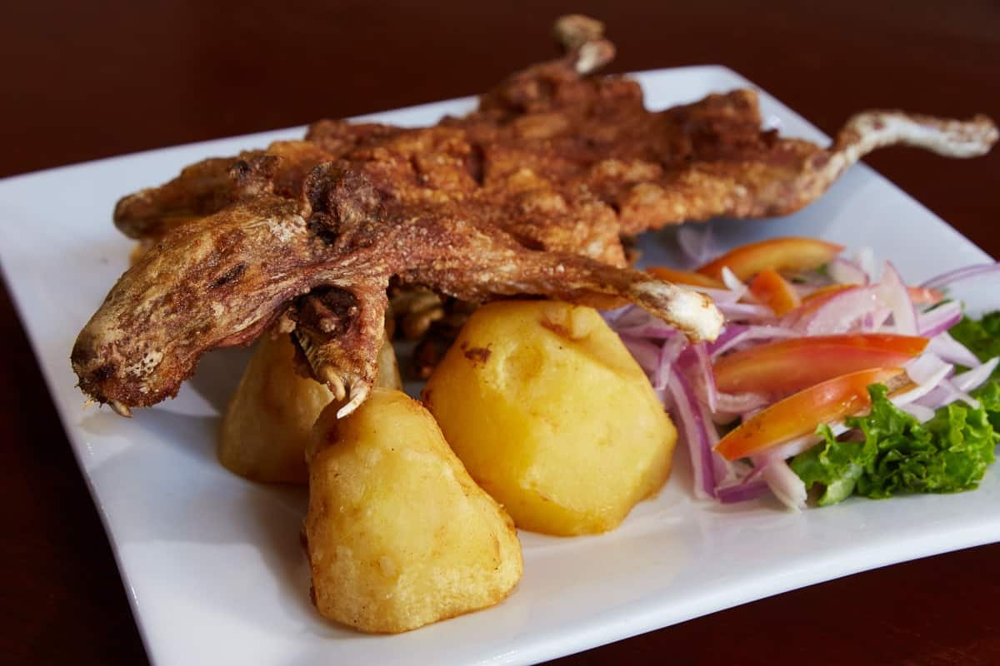

Lugares Turísticos

Parque Nacional Cotopaxi
El volcán Cotopaxi es un nevado caracterizado por la increíble perfección cónica en su forma, que yergue a más de 5000 metros de altura sobre el nivel del mar.

Tren de la Nariz del Diablo
La Nariz del Diablo representa una roca enorme en forma de nariz por cuyas faldas pasa un tren. En esta elevación las rocas son puntiagudas.

Baños de Agua Santa
Baños de Agua Santa es una ciudad ecuatoriana, y la más grande y poblada de la provincia Tungurahua, además está localizada en la región interandina.
Laguna del Quilotoa y Volcán
El Quilotoa representa una especie de caldera llena de agua con una extensión de 3 km de ancho y se encuentra a una altura de 3800 metros.
Gastronomía
En la sierra del Ecuador, podrás encontrar una enorme diversidad de platos típicos, entre sopas, platos fuertes y postres. Los platos típicos de la sierra tiene como base la carne de chancho y de res, que se combinan con la papa, el mote, entre otros. Estos platos son de alta calidad y, generalmente, requieren mucho tiempo de preparación. Te queremos contar un poco acerca de algunos platos típicos e invitarte a probarlos durante tu estancia en la sierra del Ecuador.
Locro de papa
Cuy asado
Llapingachos

Yahuarlocro

Culturas